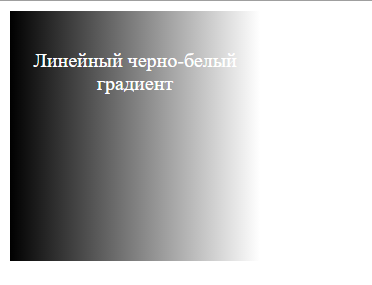

Линейный градиент
Градиенты представляют плавный переход от одного цвета к другому. В CSS3 имеется ряд встроенных градиентов, которые можно использовать для создания фона элемента.
Градиенты в CSS не представляют какого-то специального свойства. Они лишь создают значение, которое присваивается свойству background-image.
Линейный градиент распространяется по прямой от одного конца элемента к другому, осуществляя плавный переход от одного цвета к другому.
Для создания градиента нужно указать его начало и несколько цветов, например:
background-image: linear-gradient(left,black,white);
В данном случае началом градиента будет левый край элемента, который обозначается значением left. Цвета градиента: черный (black) и белый (white). То есть начиная с левого края элемента до правого будет плавно идти переход из черного цвета в белый.
В данном случае началом градиента будет левый край элемента, который обозначается значением left. Цвета градиента: черный (black) и белый (white). То есть начиная с левого края элемента до правого будет плавно идти переход из черного цвета в белый.
-webkit- /* Для Google Chrome, Safari, Microsoft Edge, Opera выше 15 версии */
-moz- /* Для Mozilla Firefox */
-o- /* Для Opera старше 15 версии (Opera 12) */
Так, полноценное использование градиента будет выглядеть следующим образом:
<!DOCTYPE html>
<html>
<head>
<meta charset="utf-8">
<title>Стилизация таблиц в CSS3</title>
<style>
div {
width: 200px;
height: 100px;
background-color: #eee;
background-image: linear-gradient(left,black,white);
background-image: -o-linear-gradient(left,black,white);
background-image: -moz-linear-gradient(left,black,white);
background-image: -webkit-linear-gradient(left,black,white);
}
p{
margin: 0;
padding-top: 30px;
text-align: center;
color:white;
}
</style>
</head>
<body>
<div><p>Линейный черно-белый градиент</p></div>
</body>
</html>

Для установки начала градиента можно использовать следующие значения: left (слева направо), right (справа налево), top (сверху вниз) или bottom (снизу вверх) Например, вертикальный градиент будет выглядеть следующим образом:.
background-image: linear-gradient(bottom,black,white);
Также можно задать диагональное направление с помощью двух значений:
background-image: linear-gradient(top left,black,white);
Кроме конкретных значений типа top или left также можно указать угол от 0 до 360, который определит направление градиента:
background-image: linear-gradient(30deg,black,white);
После величины углы указывается слово deg.
К примеру, 0deg означает, что градиент начинается в левой части и перемещается в правую часть, а при указании 45deg он начинается в нижнем левом углу и перемещается под углом 45° в верхний правый угол.
После определения начала градиента, можно указать применяемых цветов или опрные точки. Цветов не обязательно должно быть два, их может быть и больше:
background-image: linear-gradient(top, red, #ccc, blue);
Все применяемые цвета распределяются равномерно. Однако можно также указать конкретные места фона для цветовых точек. Для этого после цвета добавляется второе значение, которое и определяет положение точки.
background-image: linear-gradient(left, #ccc, red 20%, red 80%, #ccc);
Повторяющийся градиент
С помощью repeating-linear-gradient можно создавать повторяющиеся линейные градиенты. Например:
background-image: repeating-linear-gradient(left, #ccc 20px, red 30px, rgba(0, 0, 126, .5) 40px);
background-image: -moz-repeating-linear-gradient(left, #ccc 20px, red 30px, rgba(0, 0, 126, .5) 40px);
background-image: -webkit-repeating-linear-gradient(left, #ccc 20px, red 30px, rgba(0, 0, 126, .5) 40px);
В данном случае градиент начинается с левого края элемента с полоски серого цвета (#ccc) шириной 20 пикселей, далее до 30 пикселей идет переход к красному цвету, а затем до 40 пикселей выполняется обратный переход к светло-синему цвету (rgba(0, 0, 126, .5)). После этого браузер повторяет градиент, пока не заполнит всю поверхность элемента.